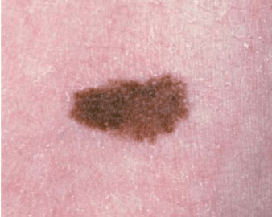
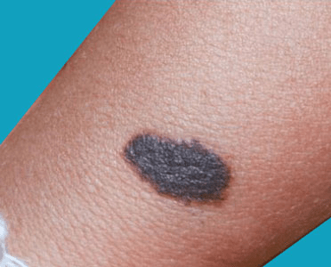

What is a Birthmark?
A birthmark (congenital melanocytic nevus, CMN) is a mole that is present
at birth or shortly thereafter. A congenital melanocytic nevus is one common
type of birthmark, caused by a cluster of color (pigment) cells in the skin
and sometimes in deeper tissues.
All birthmarks have a 2–5% lifetime risk of turning into a cancerous (malignant)
mole, which is called melanoma. This risk is higher in children who have a giant
(larger than 20 cm, or about 8 inches) congenital melanocytic nevus.
Large moles on the head or spine may rarely have associated nervous system problems.

Most babies are born without moles but will gradually acquire them with age and sun
exposure. Congenital, meaning "born with," moles are seen in about 1–2% of births.
There is no racial or gender difference in occurrence.
Congenital melanocytic nevi are brown or black, usually raised spots or patches,
that are present at birth or shortly after (before 1 year). They are usually single
but can be multiple and range in size greater than 1 cm to less than 20 cm
(bathing suit or garment lesions cover large sections of the body). Smaller,
so-called, satellite lesions are sometimes associated with large lesions.
The most common locations for these birthmarks are the buttocks, thighs, and trunk,
but lesions may occur on the face and extremities, and, least commonly, on the
palms, soles, and scalp.
Changes in thickness, color, and hair content occur through childhood and adolescence.
In later adult years, they may actually fade in color to a lighter brown.

No activity or other restrictions are needed. However, use sun protection clothing
(and sunblock after age 1) and make-up coverage, if desired for cosmetic reasons.
Any baby with a birthmark should have it checked by at least one doctor. If the doctor
recommends only observation, watch it lifelong for any change in size (other than slow
growth with the child), shape, or color and for any change in the surface
(flat areas that become more raised).
A skin biopsy may be done if there is suspicion of malignant change to the birthmark.
Small- to medium-size congenital melanocytic nevi (less than 20 cm, or about 8 inches)
are often watched rather than removed surgically. In addition to observing the mole for
any changes, photographs may be taken to document and follow potential changes in the mole.
Consultation and management by a dermatologist with further consultation to the plastic
surgeon may be necessary. Removal may be desired for cosmetic reasons.
Ideally, giant congenital melanocytic nevi (greater than 20 cm) are removed surgically
to reduce the risk of malignant change, although this is not always possible. If the
moles are numerous or involve the head or spine, consultation with a neurologist
may be suggested.